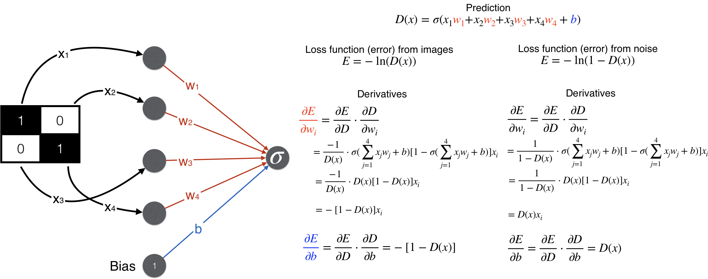
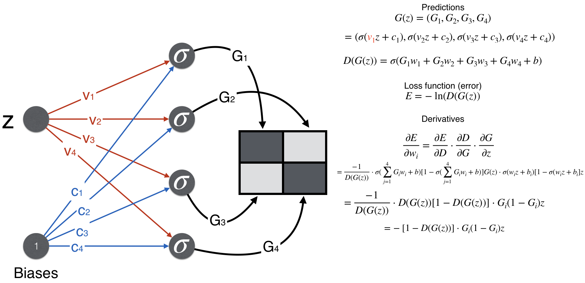

How much should i know?
- A Friendly Introduction to GAN (link in resources)
- Conditional Gan : Paper | Explanation | Working Code
- Cycle Gan: type of image to image https://www.youtube.com/watch?v=m47qsfSZoTI&ab_channel=UCFCRCV
- Pixel 2 pixel Gan : edges to images, eg: drawing to real world image https://arxiv.org/pdf/1611.07004.pdf
- StyleGan : domain transfer, eg: normal person image to cartoon Conditional gan, using class as input to both dic and gen
Introduction :
Side Information
- Framework designed by Ian GoodFellow and team, 2014.
- Proposed as a type of unsupervised learning, with a goal to generate new samples form the same distribution.
- Now, it can be used for supervised, semi-supervised and reinforcement learning also.
Main Idea
- Two types of neural network model, Generator and Discriminator participates in zero sum contest, where loss of one model is gain of other
- Generator learns from latent space ( latent variables are those which are derived from other variables, they are not observed directly ) and map it to statifiable distribution. Whereas, discriminator learns directly from the dataset or true data distribution(discriminators are typically classifiers).
- Weights in both of the models are updated dyanamically using backpropagation
- Model is trained until generator fools discriminator half of the time.
Types
1. Normal GANs
2. Conditional GANs
Paper | Explanation | Working CodeFrom the paper :
- Preivosuly the GANs where producing the combined results for all categories, conditional GANs made it possible to generate results for a specific category.
- We have to pass Y to both the generator and discriminator. According to the paper, "y could be any kind of auxiliary information, such as class labels or data from other modalities". Here's an image from the paper.
- The loss function is also changed,
Normal GANs: min(G)max(D) V(D, G) = Ex∼pdata(x)[log D(x)] + Ez∼pz(z)[log(1 − D(G(z)))]
Conditional GANs: min(G)max(D) V(D, G) = Ex∼pdata(x)[log D(x|y)] + Ez∼pz(z)[log(1 − D(G(z|y)))]

From the explanation :
Explanation is similar to the paper with code example. Also see this explanation of High Resolution Image Synthesis which uses Conditional Gans and boundaries of images to create good resolution image.
Its's paper : High-Resolution Image Synthesis and Semantic Manipulation with Conditional GANs
Code:
See Machine Learning Mastery, the whole code for both GANs and Conditional GANs. Try to relate the above image with model description. Link: How to Develop a Conditional GAN (cGAN) From Scratch
Fully Visible Belief Nets: search for equation pixlecnn is faster than pixelrnn. Generation time is still slow, training time is faster. See how to improve pixelcnn performance like gated convolutional layers, short-cut connections Variational Auto-Encoder : latent encoder , features, decoder, loss function We don't have labels https://www.tensorflow.org/tutorials/generative/dcgan
Maths behind it
Discriminator

Generator

Read more : Working Example
Lectures
Deep Generative Modeling | MIT
Imp Content
Auto Encoders (or Traditional AutoEncoders): It uses bottleneck approach, like compressing, ensuring that model leanrs to compress image into smaller latent space. It a diterministic approach.
Encoder : Mapping a given data sample to a lower dimension latent space 'z', basically compressing it
Decoder : Reconstruct the data sample from the latent space 'z', decompressing it.
But using the Neural nets for this. Challenge: Clearity is being lost as many pixel info are lost due to cnn layers like dropouts. Fully unsupervised as we are not having any label. 2D means using 2 variables to describe an image.
Varitional Auto Encoders:
Instead of using bottleneck approach to lower the latent space, learn the probabilty distribution using mean and standard deviation , we can create a probabilistic ditribution of latent space.
Encoder : p(Z|X) : Finding probability distribution of latent space Z, given data sample X
Decoder: q(X|Z) : Given the latent space Z, finding probability distribution of sample X
Loss: Reconstruction loss + Regularization loss (Uses prior prob , so that network try to learn this prior distribution. Can use Gaussian for this, mean of 0, std = 1. Network may overfit without it)
See, how KL divergence can be used for Regularization loss
Reparameterizing the sample layer: What I understood, we were unable to backpropagate due to stochastic node, so we took out the part which was causing the issue by re parameterizing or expanding that node zTopic still not clear, see if imp
Rest: How gan works by taking a linear exmple.Lecture 13 | Generative Models
Important Content: SuperResolution : Will be required after generating images from GANs to increase the resolution. See how to implement : PyImageSerch Keras IO Taxonomy of Generative models
Explicit density estimation :
- Tractable density : Fully Visible Belief Nets: NADE, MADE, PixelRNN/CNN
- Approximate density
- Variational : Variational auto encoder
- Markov chain : Boltzmann machine
- Direct : GAN
- Markov Chain : GSN
To improve the image quality, super resolution and colurization. Pixel RNN: See how based on previous modeled pixels, we can model new one. Modelling every adjacent pixels one by one. Pixel CNN: